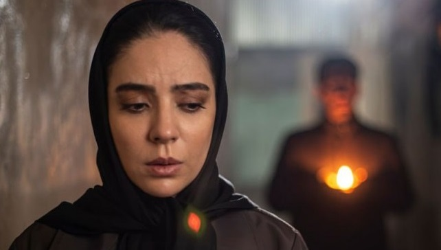

فیلم کوتاه «دُم اسبی» به کارگردانی بیتا اللهیاری پس از طی مراحل پایانی آماده نمایش شد.
فیلم کوتاه «دُم اسبی» به کارگردانی بیتا اللهیاری داستان لاله، ۳۵ ساله و دکتر مامایی را روایت میکند که برای معاینه زنی باردار به نام اختر، وارد خانهای میشود. حضور لاله در این خانه، او را با موقعیتی غیرمنتظره و شرایطی مواجه میکند که بهتدریج ابعاد تازهای پیدا میکند.
این فیلم کوتاه با تمرکز بر موقعیتی غیرعادی و مرزی میان واقعیت و جهان ماورایی، روایتگر مواجهه زنی با شرایطی پیشبینینشده است؛ موقعیتی که در ادامه ابعاد دیگری پیدا میکند.
«دُم اسبی» نخستین تجربه کارگردانی بیتا اللهیاری است. اللهیاری پیش از این در حوزههای دستیاری، برنامهریزی و بازیگری فعالیت داشته و با این فیلم، نخستین تجربه خود را در مقام کارگردان پشت سر گذاشته است.
فیلمنامه «دُم اسبی» را محمد رحمتی نوشته که سال پیش برای فیلم «هایکپی» برندهٔ برگ زرین بهترین فیلمنامهٔ اقتباسی از چهلودومین دورهٔ جشنوارهٔ فیلم کوتاه تهران شد. این فیلم نیز اقتباسی از داستان کوتاه «خانهٔ سنگباران» نوشته شهلا پروینروح است.
بهار داورزنی، بیتا طایی، نسا یوسفی، یوسف فروتن، فرزانه آیافت، محمد اعلایی، بهزاد محسنی و مجتبی واشیان بازیگران فیلم کوتاه «دُم اسبی» هستند.
عوامل فیلم کوتاه «دُم اسبی» عبارتاند از: کارگردان: بیتا اللهیاری، نویسنده: محمد رحمتی، تهیهکنندگان: بیتا اللهیاری و سلمان دارابی، مدیر فیلمبرداری: سالار اردستانی، تدوین: احسان واثقی، آهنگساز: ژوبین عسکریه، طراحی و ترکیب صدا: محمدحسین ابراهیمی، طراح لباس و صحنه: رامین غفوری، مدیر صدابرداری: آرش برومند، طراح چهرهپردازی: نیما عبدی، سرپرست جلوههای ویژه: محمد کشاورز خمسه، اصلاح رنگ: علی شعبانی، استودیو دیجیتال اردیبهشت، زیرنویس و تیزر: فرناز محمدی، مترجم: سپیده خلیلی، مدیر تولید: علی اللهیاری بیک، مجری طرح: خاوردخت کرمی، مدیر تدارکات: میثم یکتا، برنامهریز و دستیار اول کارگردان: امیرعلی قنبری، دستیار دوم کارگردان: مهدی ابراهیمی، منشی صحنه: نجمه بقولی، عکاس: مهدی حیدری، نورپرداز: پویا اقبالی، دستیار اول فیلمبرداری: سپهر مژدهی، گروه نور: علیرضا طالبی و حسام شیخانی، مسئول دوربین: علیرضا مجد، دستیار تدوین: آیت رهکوی، نوازندگان: ژوبین عسکریه، مهدی حمیدی و سلمان دارابی، دستیاران صدابردار: فرزان اصغرزاده و علی لطفی، دستیاران صداگذار: امیر رضازاده، محمد کیان کینی، استودیو شنو، دستیار لباس و صحنه: سروناز عزبدفتری، دستیار چهرهپردازی: محدثه بیجاری، کامپوزیت: مانی قبولی و ابوالفضل برزگر، هوش مصنوعی: مسعود بهشتی، دستیار تولید: محمدمهدی کرمی، تدارکات: احمد رئیسی، پشتیبانی فنی: حمید لدنی، Izoom Rental، روابط عمومی: زهره کردلو، با تشکر از سعید خضریان، پارمیدا رضایی و مجتبی سحرخیز.